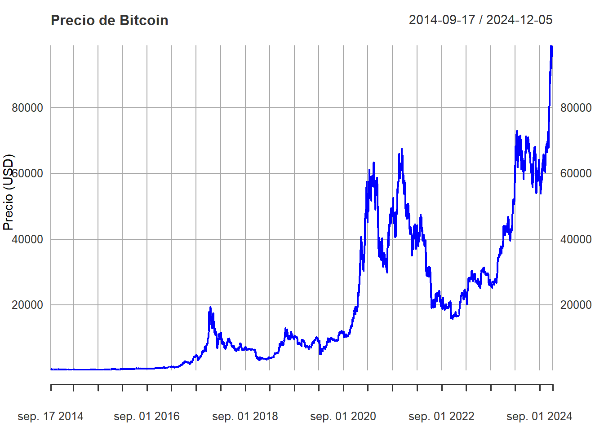
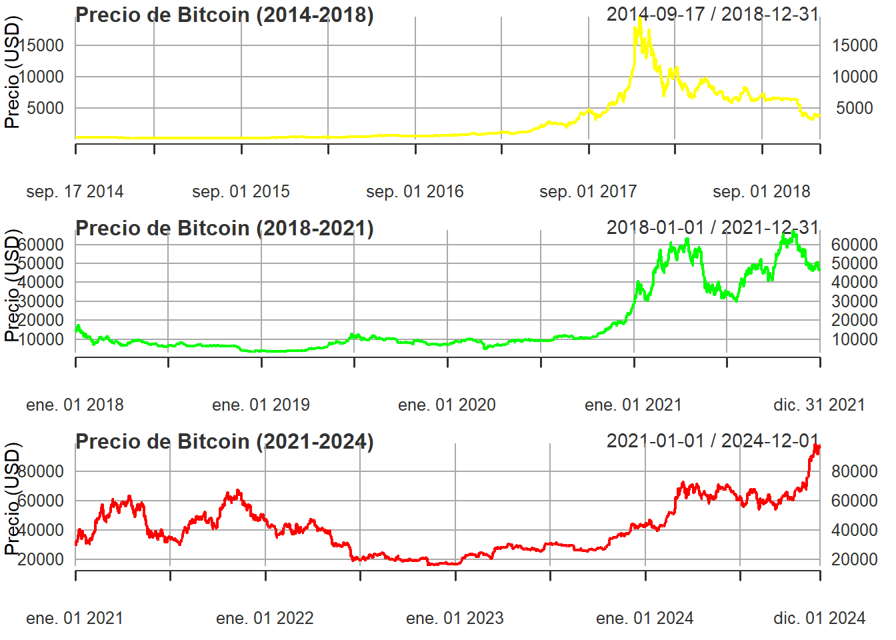
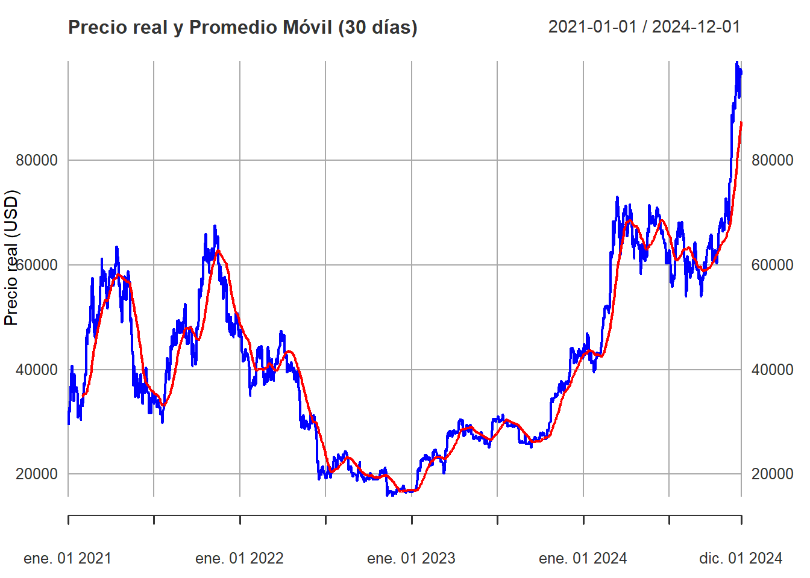
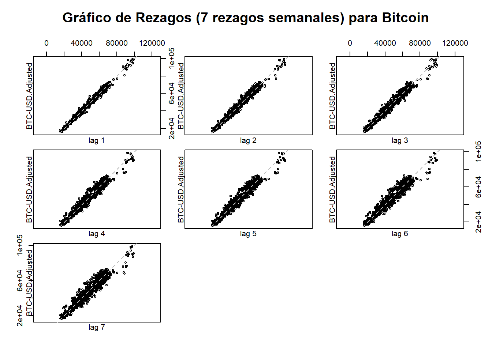
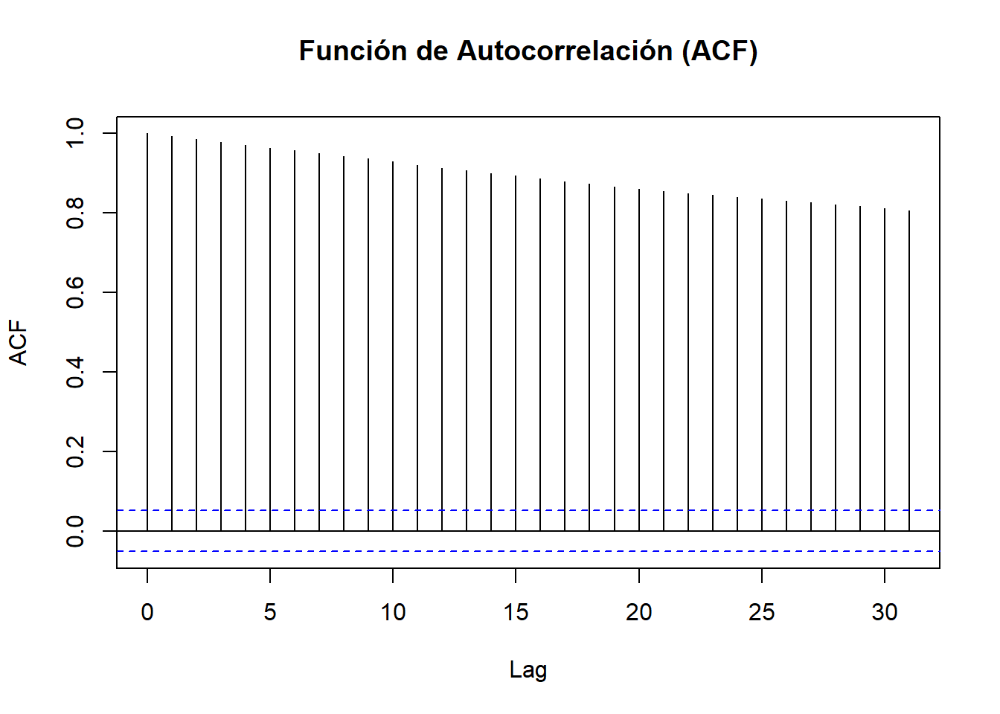
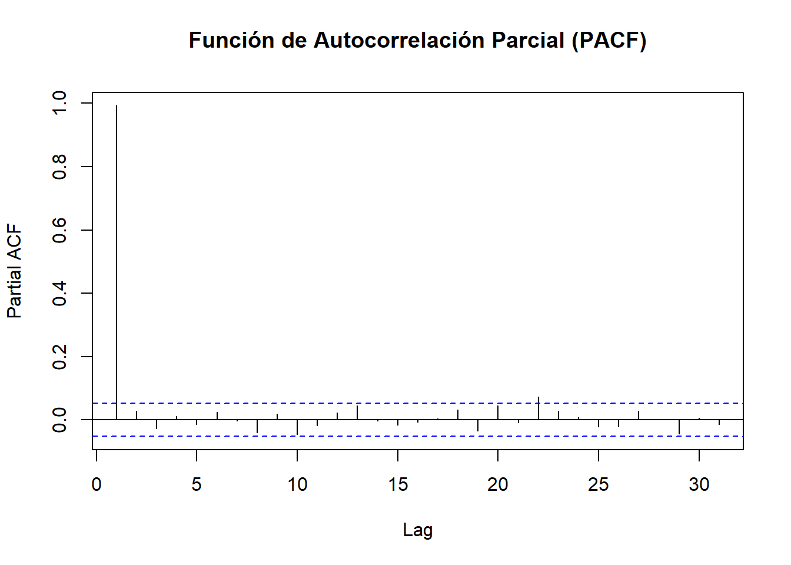
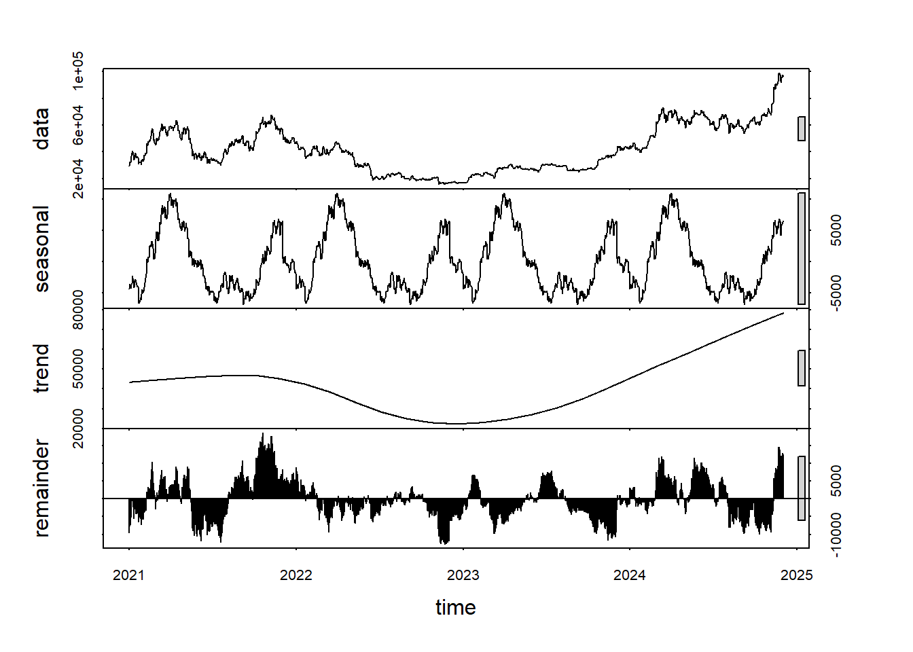

Capítulo 2 Estructura de datos
Precio Ajustado de Bitcoin: Se define como el valor de cierre de Bitcoin en el mercado al final de cada día, ajustado por eventos de mercado que puedan afectar su valor, tales como cambios significativos en la estructura del mercado o alteraciones en la metodología de cálculo. En este caso, el precio ajustado proporciona una representación consistente del valor real de Bitcoin, reflejando no solo su cotización diaria sino también ajustes realizados por las plataformas de datos financieros. Estos ajustes eliminan efectos externos para facilitar un análisis temporal más preciso. En adelante esta variable se conocerá como “Precio” y estará expresada en dólares (USD).
Para evaluar la estructura de la serie de tiempo, se grafica la variable Precio a lo largo del tiempo, con el objetivo de identificar posibles patrones visuales que ayuden a determinar el intervalo temporal más adecuado para explicar los componentes de la serie.
# Graficar el precio usando la función base de plot
plot(Cl(btc_data), main = "Precio de Bitcoin",
xlab = "Fecha", ylab = "Precio (USD)", col = "blue")
Entre septiembre de 2014 hasta diciembre de 2024 se observa una serie de fluctuaciones significativas en el precio del Bitcoin. Esta gráfica es un claro ejemplo de la volatilidad del mercado de criptomonedas, donde factores como regulaciones, adopción tecnológica, y cambios en el interés de los inversores pueden influir significativamente en el precio.
En vista de lo anterior, se procede a dividir la serie en tres periodos para observar el comportamiento del precio.
# Filtrar los datos por los tres periodos
btc_2014_2018 <- btc_data["2014-01-01/2018-12-31"]
btc_2018_2021 <- btc_data["2018-01-01/2021-12-31"]
btc_2021_2024 <- btc_data["2021-01-01/2024-12-01"]
# Graficar los tres periodos
par(mfrow = c(3, 1)) # Configura la gráfica para que muestre 3 gráficos verticalmente
# Graficar el periodo 2014-2018
plot(Cl(btc_2014_2018), main = "Precio de Bitcoin (2014-2018)",
xlab = "Fecha", ylab = "Precio (USD)", col = "yellow")
# Graficar el periodo 2018-2021
plot(Cl(btc_2018_2021), main = "Precio de Bitcoin (2018-2021)",
xlab = "Fecha", ylab = "Precio (USD)", col = "green")
# Graficar el periodo 2021-2024
plot(Cl(btc_2021_2024), main = "Precio de Bitcoin (2021-2024)",
xlab = "Fecha", ylab = "Precio (USD)", col = "red")
Se encuentra que el periodo más adecuado para analizar en detalle la serie de tiempo es el que comprende los años 2021 a 2024, debido a que presenta una combinación favorable de estabilidad relativa, menor volatilidad y relevancia temporal, que son factores clave para un modelado adecuado de series de tiempo. Adicional, al ser el periodo más reciente, refleja mejor las condiciones actuales del mercado.
2.1 Promedio Móvil
El promedio móvil suaviza la serie para eliminar fluctuaciones cortas y destacar las tendencias a largo plazo. Se trabajará con la serie al corte del 01 de diciembre de 2024.
# Extraer el Precio Ajustado
btc_final <- Ad(btc_data)["2021-01-01/2024-12-01"]
# Mostrar primeros registros
head(btc_final)## BTC-USD.Adjusted
## 2021-01-01 29374.15
## 2021-01-02 32127.27
## 2021-01-03 32782.02
## 2021-01-04 31971.91
## 2021-01-05 33992.43
## 2021-01-06 36824.36## BTC-USD.Adjusted
## 2024-11-26 91985.32
## 2024-11-27 95962.53
## 2024-11-28 95652.47
## 2024-11-29 97461.52
## 2024-11-30 96449.05
## 2024-12-01 97279.79lines(btc_ma, col = "red", lwd = 2)
legend("topright", legend = c("Precio real", "Promedio Móvil (30 días)"),
col = c("blue", "red"), lty = 1, lwd = 2, cex = 0.8)
El promedio móvil proporciona una mejor percepción de la tendencia a largo plazo. Cuando el precio del Bitcoin está por encima de su promedio móvil, indica una tendencia alcista general, y cuando está por debajo, una tendencia bajista. En este caso se destacan los siguientes patrones:
El precio de Bitcoin muestra una alta volatilidad a lo largo del período, con picos y caídas abruptas, siendo característico del mercado de criptomonedas, donde los precios pueden cambiar dramáticamente en cortos períodos de tiempo.
Hay períodos claros donde el precio aumenta o disminuye de manera sostenida. Por ejemplo, un aumento significativo ocurre a principios de 2023, seguido de una caída y luego una recuperación hacia fines de 2023 y 2024. En otras palabras se observan tendencias tanto alcistas como bajistas.
2.2 Rezagos (Lag)
El análisis de rezagos ayuda a ver la relación entre los valores pasados y actuales de la serie.
# Gráfico de rezagos semanales (7 días)
lag.plot(btc_final, lags = 7, do.lines = FALSE, main = "Gráfico de Rezagos (7 rezagos semanales) para Bitcoin")
Cada subgráfico muestra la relación entre el precio ajustado de Bitcoin en una semana dada y su precio en semanas anteriores (desde 1 semana atrás hasta 7 semanas atrás). Cada uno muestra una relación lineal positiva fuerte. Esto sugiere que los precios no son aleatorios; sino que, hay una consistencia o patrón predecible donde los precios de semanas anteriores tienen una correlación positiva con los precios futuros. Este comportamiento identificable es un indicativo de autocorrelación en la serie de tiempo, que es típica en datos financieros y económicos donde los valores pasados influyen en los valores futuros. Esto es un indicio para corroborar la hipótesis de que los precios de Bitcoin no son aleatorios, y en su lugar sugiere un modelo donde los precios siguen un patrón dependiente del tiempo.
# Graficar la función de autocorrelación (ACF)
acf((btc_final), main = "Función de Autocorrelación (ACF)")
Se observa que la autocorrelación se mantiene alta y positiva para cada rezago, disminuyendo gradualmente pero manteniéndose significativa a lo largo de los 30 rezagos observados. Esto refuerza la idea de que el precio de Bitcoin tiene una memoria de largo plazo, donde los valores pasados tienen una influencia prolongada sobre los valores futuros.
# Graficar la función de autocorrelación autocorrelación parcial (PACF)
pacf((btc_final), main = "Función de Autocorrelación Parcial (PACF)")
La autocorrelación parcial es significativa solo en el primer rezago y se acerca a cero en los siguientes rezagos, lo que indica que hay una relación importante entre el valor actual y el valor del periodo inmediatamente anterior, y que una vez se ha tenido en cuenta el efecto del valor de la semana pasada, los valores de semanas más remotas no añaden información relevante para predecir el valor actual. Esto sugiere que el impacto predictivo disminuye rápidamente después del primer rezago.
En vista de lo anterior, el comportamiento de Bitcoin muestra una fuerte persistencia temporal, indicando que los precios pasados son muy útiles para predecir precios futuros a corto plazo.
2.3 Estacionalidad
Descomponer la serie temporal en tres componentes: tendencia, estacionalidad y residuos, permite identificar ciclos recurrentes.
# Convertir el xts a un objeto ts para la descomposición
btc_ts <- ts(as.numeric(btc_final), start = c(2021, 1), frequency = 365)
# Aplicar la descomposición STL
stl_result <- stl(btc_ts, s.window = "periodic")
# Graficar la descomposición STL
plot(stl_result)
En el gráfico anterior se puede apreciar que:
La estacionalidad (seasonal) muestra patrones recurrentes que se repiten a intervalos regulares. En este caso, parece haber una periodicidad anual, lo que indica que la amplitud de esta componente se mantiene relativamente estable.
Hay presencia de tendencia (trend) de la serie, destacando una caída en la tendencia durante 2022, seguida por una recuperación gradual que empieza a aumentar hacia el final de 2023 y continúa en 2024. Esto indica que, a pesar de las fluctuaciones de corto plazo, hubo un período de descenso prolongado que luego se revirtió, sugiriendo una mejora en la valoración de Bitcoin.
El componente residual (remainder), que representa las fluctuaciones no explicadas por los componentes de tendencia o estacionalidad, muestra una alta volatilidad, lo que sugiere la presencia de factores aleatorios e impredecibles que afectan el precio de Bitcoin, algo típico de los activos financieros volátiles.